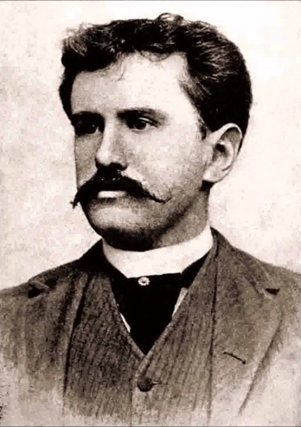

 Sue(phiên âm: Xiu) và Johnsy(Phiên âm: Giôn Xi) là 2 nữ hoạ sĩ sống trong 1 khu nhà trọ. Cụ Behrman(Phiên âm: Bơ-men) là một hoạ sĩ già sống ở gần đó ; cả đời cụ khao khát vẽ được một kiệt tác nhưng chưa thực hiện được. Mùa đông năm ấy, Johnsy bị bệnh sưng phổi rất nặng. Bệnh tật và nghèo túng khiến cô tuyệt vọng không muôns sống nữa và nghĩ rằng khi chiếc lá thường xuân rụng xuống sẽ là lúc mình lìa đời. Sue hết lòng lo lắng và chạy chữa cho bạn nhưng vô ích. Biết được ý nghĩ điên rồ đó của Johnsy, cụ Behrman âm thầm thức suốt đêm mưa gió để vẽ chiếc lá thường xuân. Chiếc lá cuối cùng đã không rụng trong đêm bão lớn khiến Johnsy suy nghĩ lại, cô hi vọng và muốn được sống. Tuy nhiên, cụ Behrman lại chết vì bệnh sưng phổi sau một đêm đội mưa đội gió để vẽ chiếc lá cuối cùng trên tường nhằm cứu Johnsy. Sau khi Sue được thông báo Johnsy đẫ thoát khổi nguy hiểm, cô lặng lẽ báo cho bạn báo cho bạn về cái chết của cụ Behrman và bí mật của chiếc lá cuối cùng.